何歳からでも遅くない！
ゼロから始めるIT入門道（現代版）
概要
最近の情報を調べてまとめました。
似た境遇の人と接する機会ができたとき、背景の理解や、教育の方針決めに活かしていただければ幸いです。
教える側としてお小遣い稼ぎしたい時の参考にもしていただけるかと思います。
自己紹介 （ IT入門前のスキル感 ）
・はじめてPCに触れたのは、小学校低学年。（周りより早い方でした。）
・デビューOSは WindowsXP。
・おもしろフラッシュ倉庫、RPGツクール2000、HTML、MMORPGなどで遊ぶ純粋無垢な子供時代。
高校卒業後
・アパレル専門学校への入学を機に、メインOSをMac OSXへ変更。
以降、プライベートのメインOSはMac OSXになる。
（サブ機として、WindowのミニPCや、タブレットPCも所持してます。）
・専門学生時代の得意分野は、Photoshop、Illustrator、AfterEffects、アパレルCADなど。
就職後
・卒業後に就職したアパレルメーカーでもPCを使う仕事を多く任されていたが、コーディング関連知識は、ほぼ無し。
（興味はあったが、学ぶ機会がなかった。）
・友人の勉強会への参加をきっかけに、本格的に触れ始める。
学習方法

©Wokandapix from Pixabay
1. 高額プログラミングスクール
©janeb13 from Pixabay
2. 就職（未経験歓迎・研修制度充実企業）

©StockSnap from Pixabay
3. WEB学習サービス
©StockSnap from Pixabay
4. コミュニティ
©Nicholas Jackson from Pixabay
5. メンター©rawpixel from Pixabay
6. ブログ・まとめサイト1. 高額プログラミングスクール
©Wokandapix from Pixabay
安心感 ･ 探しやすさ ･ 費用の高さ。
備考
就職の斡旋まで行うスクールが多い。

CodeCamp
マスターコース
2ヶ月 ¥148,000
プレミアムコース
2ヶ月 ¥248,000
プレミアムプラスコース
2ヶ月 ¥398,000

POTEPAN CAMP
オープンコース
2ヶ月 ¥100,000
キャリアコース
3ヶ月 ¥250,000
ビギナーコース
4ヶ月 ¥300,000
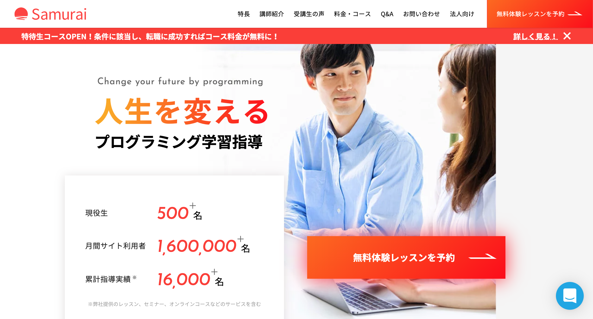
侍エンジニア塾
デビューコース
1ヶ月 ¥168,000
フリーランスコース
3ヶ月 ¥438,000
ビジネスコース
6ヶ月 ¥698,000

TECH::CAMP
TECH::CAMP
1ヶ月 ¥14,800 + 入会費 ¥148,000
TECH::EXPERT (夜間・休日スタイル)
6ヶ月 ¥798,000
TECH::EXPERT (短期集中スタイル)
10週間 ¥598,000
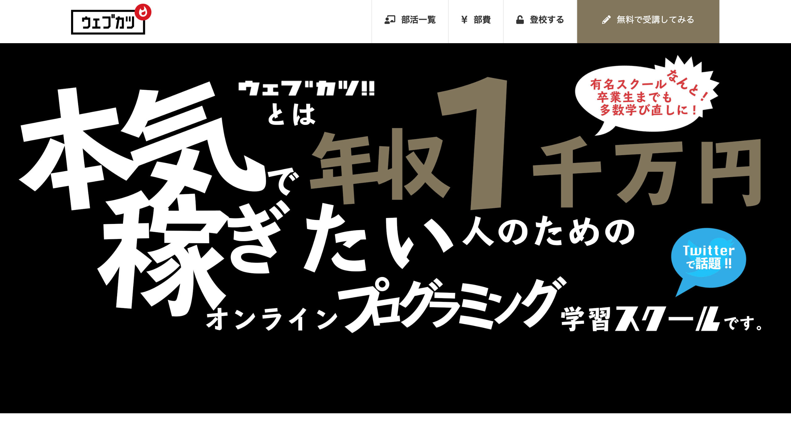
ウェブカツ
アスリート部員
1ヶ月 ¥43,600 + 入会費 ¥180,000
アスリート部員 (完全月額制)
1ヶ月 ¥70,600
特待生部員
6ヶ月 ¥564,000
2. 就職 （未経験歓迎・研修制度充実企業）
©janeb13 from Pixabay
仕事のためのスキルが確実に身につく。
費用がかからない。
備考
求人の数は少なくないが、かなり薄給。
家電量販店や事務仕事などへ派遣されながら、業務時間外で企業が用意したカリキュラムをこなすスタイルが主流。
集中学習コースなど用意してある企業もある（無給）。
印象
ハイリスクなイメージ。
新卒のタイミングなど、支出の少ない状況からの就職であれば、選択肢に入るかも。
3. WEB学習サービス
©StockSnap from Pixabay
コストパフォーマンスが良い。 気軽にはじめられる。 各社、個性的な学習スタイル。
備考
基本となる前提知識や、環境構築等について解説されていない場合もある。
基本的に一人での学習になるため、自身の相対的なレベル感を把握できない点がデメリット。

Progate
月額 ¥980
無料範囲あり
特徴
スライド講義で説明を受けた後に、
実際にコードを書いて学ぶスタイル。
入門者向けで、わかりやすさ重視。
講義クリアで経験値が溜まりレベルが上がる。

ドットインストール
月額 ¥980
無料範囲あり
特徴
3分動画学習サービス。
PC画面のみのシンプルな動画が多い。
初心者向けを謳っており、利用者数が多い。
音声の文字起こし機能、
ソースコード閲覧機能などもある。

N予備校
クレジットカード決済 月額 ¥1,000
iTunes Store決済 月額 ¥1,300
無料範囲あり
特徴
テキストに沿って学ぶスタイル。
他サービスと比べ、学習内容が体系的。
内容、UIともに、気軽さよりも堅実さ重視。
手堅く学びたい人向き。

Schoo
WEB登録 月額 ¥980 アプリ登録 月額 ¥1,080
プレミアムプラス学生 ¥1,980 1年契約で2ヶ月無料
特徴
講義動画で学ぶスタイル。
ドットインストールと違い、
こちらは実際の講義のような視点の動画。
講義の質は、講師の質にも左右される。

Udemy
講義ごと ¥2,400 ~ ¥24,000
特徴
買い切り方式のサービス。
プロが作成した講義（資料）を購入できる。
セールで安くなるタイミングが狙い目。
4. コミュニティ
©StockSnap from Pixabay
- SNS -
- Q&A -
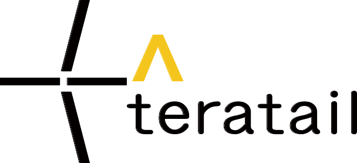
- 情報共有 -
- 勉強会 -
- SNS -
ハッシュタグ
#駆け出しエンジニアと繋がりたい
プログラミング学習をはじめた人が、Twitterに専用アカウントを作り、このハッシュタグを付けてコミュニティに参加している。
意識が高い雰囲気の方が多い。
#100DaysOfCode
100日の間、毎日5分でも良いから学習時間を作ろうという試み。公式サイトがある。
経過日数、当日の学習内容や学習時間、合計の学習時間などを記録して呟く。
#ウェブカツ
ウェブカツの学生は、このハッシュタグを付けて呟いている。 #100DaysOfCodeの実施を推奨している様子。
#100DaysOfCodeがついてるツイートにはこのハッシュタグも付いてる事が多い。
インフルエンサー
@kazutaka_dev
@showheyohtaki
@kazukichi3110 など
駆け出しエンジニアがこぞってフォローしている。
リプライへの返信率が高く、有益な情報を沢山呟いている。
駆け出しエンジニアから貰ったリプライをRTして応援したりしている。
- Q&A -
日本のエンジニアが集うQ&Aコミュニティサイト。某Yah○○!知恵袋のエンジニア版。国産サイト。
コンピュータや情報技術、特にプログラミング技術に関するナレッジコミュニティ。海外発のサイト。
- 情報共有 -
プログラマのための技術情報共有サービス。技術的な事をググると十中八九Qiitaの記事がでてくる。
初心者もQiitaアカウントを作って、学習内容をまとめておくと就職に有利などと言われている。
- 勉強会 -
エンジニアをつなぐIT勉強会支援プラットフォーム。
主にエンジニア向けの勉強会やセミナーなどのイベント開催・参加が無料で行える。
5. メンター
©Nicholas Jackson from Pixabay
意味
メンタリングという育成方法において、指導者のことを指す言葉。
育成される側（メンティー）と１対１で対話し、指導や助言をする存在。
メンティーから見ると“自分の進みたい方向にいる先駆者”（ https://noda-biz.com/menta/ より抜粋）とも言える。
重要性
ITの技術情報は世の中にあふれているが、情報量が多すぎて難解だったり、大前提の知識には触れず省略されている情報も多い。
そのため、目標に到達するための知識を全て一人で取捨選択して学習するのは非常に難しいため、疑問点を相談できる相手が居ることがとても重要。
メンターを付けるという選択肢があることを知っているかどうかで、学習にかかる時間や費用などのコストが大きく変わってくるだろう。
代表的な関連サービス
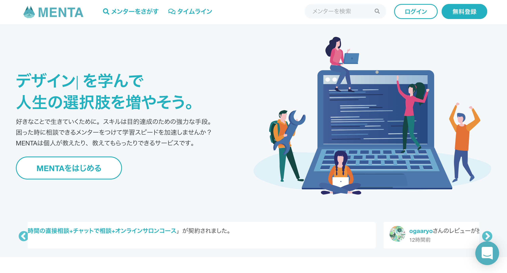
MENTA
相場 単発 ¥1,000 ~ 月額 ¥15,000+α
メンターマッチングサービス。
大体のメンターが単発、月額などで複数のコースを用意している。
IT関連のメンターが大半だが、起業方法、身体を柔らかくする方法、
あなたのイラスト褒めます、などのメンターもいる。
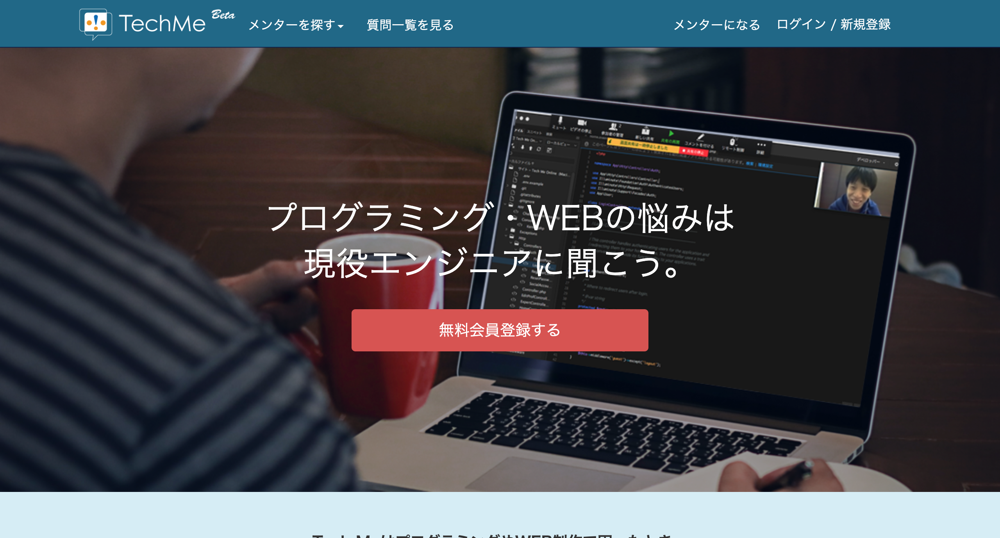
TechMe
相場 30分 ¥1,500 ~ ¥6,250
30分単位で現役のエンジニアに個別相談ができるプラットフォーム。
MENTAと違い単発の相談がメイン。
プログラミング初学者だけでなく、
IT担当のいない or 少ない会社もターゲットにしている。
6. ブログ・参考サイト
©rawpixel from Pixabay
これだけではどうにもならないが、これが無くてはどうにもならない。
なくてはならない存在。いつもお世話になっております。
代表的な参考サイト
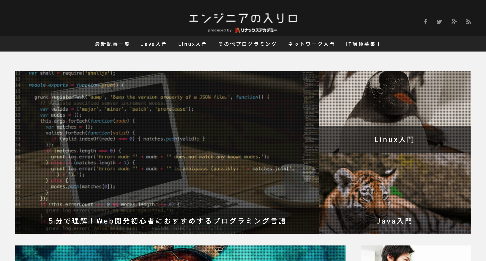
エンジニアの入り口
CSS/Java/Linux/PHP/
Ruby/JavaScript など
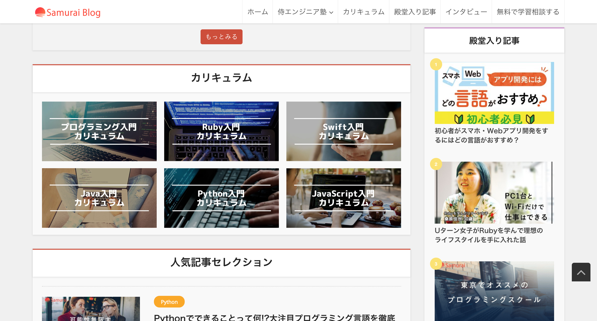
侍エンジニア塾ブログ
Ruby/Swift/Java/Python/
JavaScript など
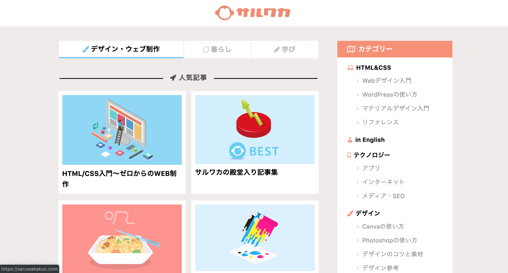
サルワカ
CSS/WEBデザイン/
WordPress など
個人的お気に入りサイト
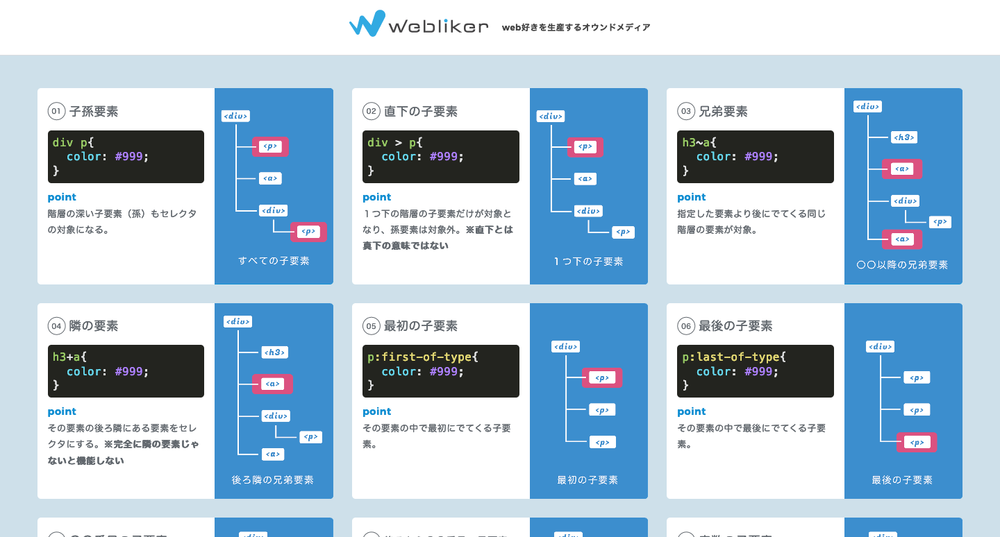
webliker
CSSセレクタのチートシート など
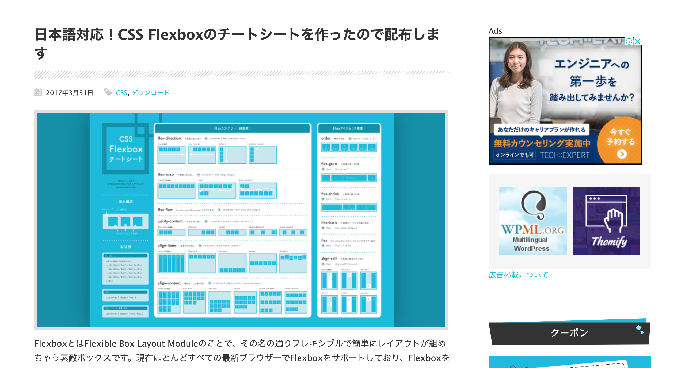
WEBクリエイターボックス
Flexboxのチートシート など
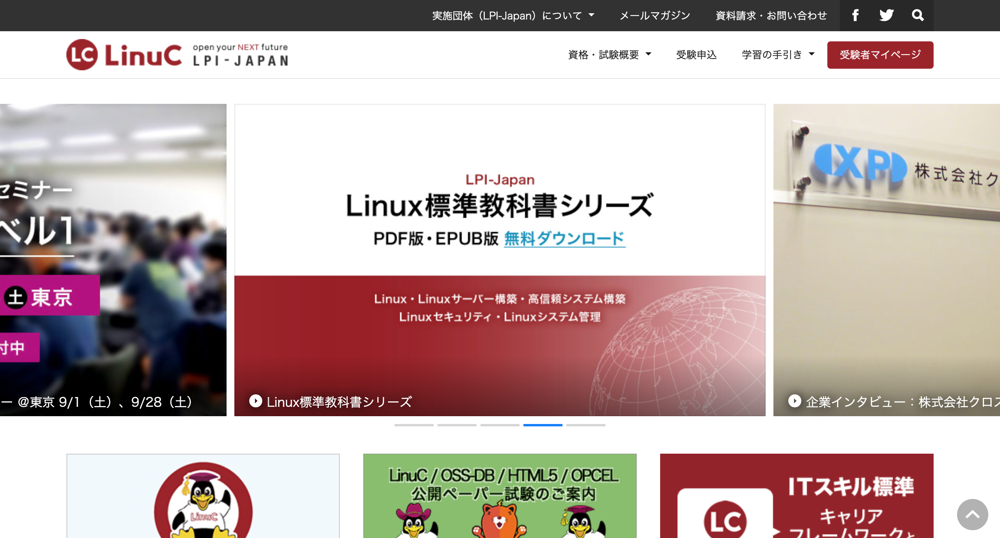
LinuC
Linux標準教科書 など
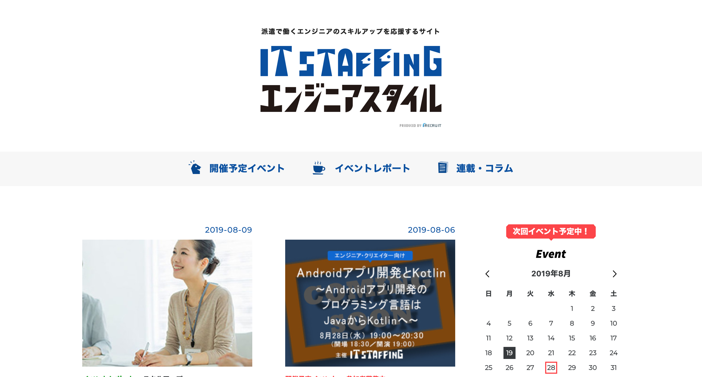
IT STAFFING
エンジニアスタイル
スキルアップ情報 など
感想
以上です。
紹介したコンテンツはどれも素晴らしいものですが、
Twitterの駆け出しエンジニアのアカウントなど眺めていると、
1つのコンテンツに頼り切って挫折してしまう人が多い印象を受けました。
2~3個くらい、組み合わせて学習しないと厳しいと思いました。
いつか僕も、教える側の観点からここにまとめた知識を活かせるようになるため、
これからもっと経験と学習を積み重ねていきたいです。
まずは、次回の技術MTGでお披露目できる技術を身につけるために頑張ります。
おわり ( ᐛ👐)パァ